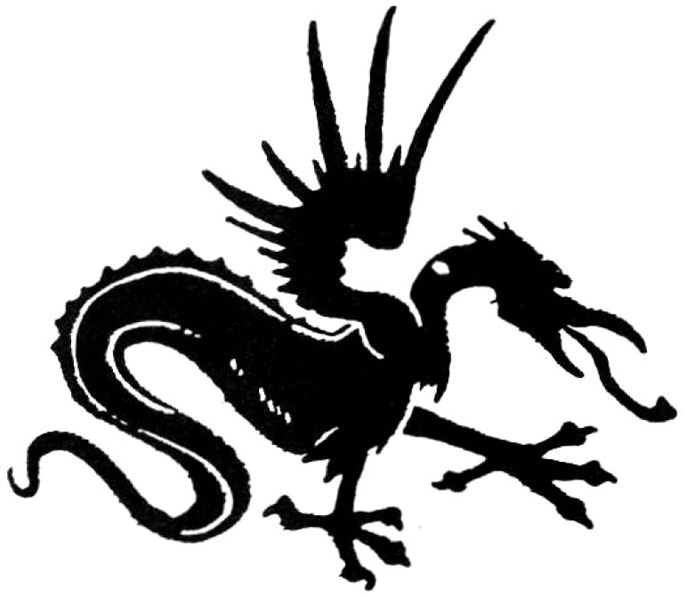

Any dream in the midst of which the dreamer has the clear thought, "Oh, I get it! This is a dream," is said to be "lucid". In a lucid dream, the dreamer recognizes the true nature of the experience as it is taking place. In the lucid dream state the" awakened" dreamer can generate amazing insights and release extraordinary creativity. Old habits can be transformed, creative energies can be mobilized and directed, problems can be solved and transcended, denials and repressions can be raised to consciousness and withdrawn, and confusing feelings, emotions and intuitions can be clarified and harmonized.
All of these marvelous things are also accomplished by remembering and working with ordinary, non-lucid dreams. fn lucid dreams, however, this healing work is sometimes woven dramatically into the dream itself, radically and "magically" extending the range and possibility of dreaming experience.
For example, a man (I will call him "Alex") dreamt:
I am fleeing from a firghtening, fiery dragon through a scorched and charred and still smouldering landscape. I run and run, until the magical moment of realization that this is all a dream! I suddenly "get it", that my terror and the pursuing monster and the whole scene are simply things that are happening in my dream. At that point, I turn and face the dragon and demand to know what he is doing in my dream.
The fire-breathing dragon stops and replies telepathically "I am your smoking addiction!" As the monster 'speaks', I have an ironic appreciation of how ironic and even funny it is for my smoking addiction to appear in my dream as a "fire-breathing dragon".
At that moment of lucid realization, the dragon suddenly seems to change. It doesn't really look any different, but its 'expression' seems to change. It isn't so scary any more.
It begins to look winsome, almost charming – ‘Puff the magic dragon’ – more like a big, old familiar, friendly family dog than a menacing, deadly fire-breather.
My lucidity allows me to look even more closely at the ‘transformed’ monster, and I see clearly that there is a nasty, sticky brown slime covering its entire body, and that noxious smoke is oozing and sputtering from every orifice, even from around its eyes, and from under and between its scales. I smell this awful, rancid, repulsive odor coming from it. My revulsion returns, and in the dream I look at it and say with all my heart, ‘Get away from me! I no longer want you in my life!’
When he awakened, Alex was amazed to discover that he no longer craved the sensation of smoke in his lungs. Perhaps even more importantly, the desire for the instant and reliable sense of "companionship" that smoking had always given him was also gone. He has not gone back to smoking since the dream.
By creating such a compelling image combining both the negative and positive elements of the addiction, his dream allowed Alex to recognize these previously unacknowledged dynamics with full emotional awareness. The "fire-breathing dragon" suddenly appears like a "big old familiar friendly family dog." Alex's decision, "I no longer want you in my life," was made in such a way that it "stuck". That is because it was made with full consciousness, directly in the face of the "old friend" with full emotional awareness of the "comfortable, reliable relationship" he was giving up.
As the dream symbolically depicts, a crucial part of Alex's addiction to cigarettes was emotional. It was centered in a preconscious fear of loneliness. One of the reasons that it had been so hard for him to quit prior to the dream was the illusion of control "lighting up" provided when feelings of loneliness appeared. His failure to consciously recognize and appreciate this dynamic component of his addiction also appears to have been the main stumbling block to "kicking the habit." Another implication of the lucid dream thought that the addiction is "like a .... family dog" is that his smoking habit may have been unconsciously fostered in his family of origin. During childhood, Alex may have been predisposed to smoke addictively by watching and being emotionally drawn into parental and sibling substance addictions and denials. In any case, the illusory emotional security that smoking provided had to be consciously acknowledged before it could be consciously relinquished. Without becoming conscious of these previously hidden emotional dynamics of the addiction, Alex's desire to be free of his noxious smoking habit could not lead to decisive action.
In my experience, such instances of spontaneous lucidity in dreams occur most often in association with corresponding moments of "lucidity" in waking life. When a person realizes that his or her true circumstances are in fact substantially different from what he or she had always supposed, then that person is likely to experience a spontaneous lucid dream. In such a dream, the true nature of the sleeper's experience-i.e. that it is really a dream-is consciously recognized in a way that reflects the sort of realization about what's really going on in waking life. Most often, this happens when a person withdraws a set of habitual projections in a waking-life situation.

An addiction is any habitual activity that insulates a person from full, conscious experience of his or her feelings and emotions. Addiction can involve various substances and emotional/sexual encounters, but for some people, prayer and good works also serve an addictive purpose. It doesn't matter what the activity is, only whether it functions to diminish the conscious impact of feelings and emotions. Dreams, because they come in the service of health and wholeness, point to the true addictive nature of even the most "laudable" behaviors when they serve this emotion-denying purpose. As Alex's dream suggests, dreams can also provide a venue for withdrawing denials and self-deceptions... and thus, for overcoming addictions.